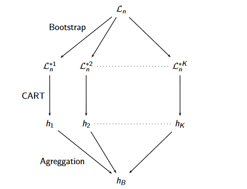
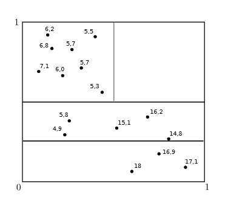

Random Forests¶
Theory¶
Ensemble methods have been developed to improve the performance of individual machine learning algorithms. These methods build multiple models, such as decision trees, and combine the decisions of the individual models by either averaging for a continuous output or through a majority vote for classification tasks. The idea is that by combining weak models of the same type, we can improve performance.
The weak models must be sufficiently different to improve the overall performance of the ensemble. For example, boosted tree algorithms incrementally build an ensemble of decision trees by training new trees with an emphasis on the individuals that were previously misclassified. Another method, Bootstrap aggregating (bagging), builds a decision tree ensemble by repeatedly re-sampling training data with replacement this results in a bagged forest. Other types of ensemble methods based on decision trees include random forests, purely random forests and rotation forests.
Random forests are a popular and easy to implement ensemble method for decision trees. They are a collection of un-pruned CART decision trees with a randomised selection of features at each split. These CART decision trees are also known as CART-RF. For more information on CART decision trees, see my earlier post on decision trees. Random forests use bagging to create the ensemble of learning subsets by sampling uniformly with replacement. Sampling with replacement means there could be duplicates in the sample. The name bootstrap aggregating comes from the sampling method which results in a so-called bootstrap sample. Furthermore, the decision trees for each learning subset are built on a randomised selection of features for each node or split. This is sometimes called feature bagging. This randomised selection of splitting variables is what differentiates random forests from a bagged forest.
Leo Breiman was instrumental in the development of both the CART model and random forests. In 1966 he introduced bagging predictors before presenting random forests in 2001. Both of these method were unthinkable before recent advancements in computer technology which can handle the required intensive calculations.
The random forest algorithm has many advantages over other machine learning algorithms. Most importantly it provides excellent levels of accuracy without overfitting and efficient performance for large data sets including large numbers of input variables (Breiman and Cutler) [1]. In theory there is no need to preprocess the data since, for example, correlated variables do not bias the results and it can estimate missing data without loss of accuracy even when a large proportion of the data are missing. However, random forest implementations, for example in SparkR, do not always handle missing values. Another important advantage of random forests is that they generate an internal unbiased estimate of the generalisation error. The major downside of random forests is that they are less intuitive than decision trees due to their complexity; it is hard to explain how we have got a particular result.
Key Concepts¶
Definition of a Random Forest (Genuer et al.) [2]
We define a learning set \(L = \{(X_1,Y_1), (X_2,Y_2)...(X_n,Y_n)\}\) containing \(n\) independent and identically distributed observations of a random vector \((X,Y)\). Where \(X \in R^p\), \(R\) denoting the real number space, contains explanatory variables and \(Y \in \Upsilon\) where \(\Upsilon\) is a class label or numerical value. For classification problems, a classifier \(t\), is a map \(t: R^p\rightarrow\Upsilon\) or for regression, a so-called regression function \(s\), gives \(Y=s(X) + \epsilon\).
Bootstrapping allows us to generate \(k\) learning sets, \(L_k\), composed of \(m\) samples, \(m \leqslant n\), obtained by uniform sampling with replacement from \(L\). In the case of a random forest, we have \(m = n\). As illustrated below, for each learning set a decision tree is created and the result of each tree is aggregated: \(h_B(x) = \frac{1}{K} \sum_{k=1}^K h_k(x)\).
Below is the schema of a random forest (Genuer et al.) [3]
{kind=link}
Gini importance is the mean Gini gain due to a given variable for all of the trees. This can be used for variables of different types. However, it is biased towards continuous variables and categorical variables with many modalities.
Permutation importance is the mean decrease in model performance after permuting the values in the out-of-bag samples for a given variable. The idea is that if we scramble all the values for variable \(X_m\) and the accuracy of the prediction doesn’t change much, then the variable must not be very important. This measure is only biased when sub-sampling is used.
Other Forest Models¶
Purely random forest - this is a family of simplified models for which \(X=[0,1]^d\). This family of models is used to asses theoretical values of random forests. The choice of partitions for each decision tree is independent of the particular learning set (Biau and Scornet) [5]. For example, a centred forest uniformly selects a splitting feature amongst all the features and splits at the centre of the cell along the selected feature. The process continues until a tree is built to a predefined depth. The final label for a given node is calculated by averaging the \(Y_i\) for the corresponding \(X_i\) in the node.
Below is a centred forest at level 2 (Biau and Scornet) [6]
{kind=link}
A uniform forest is another type of purely random forest. The difference between a centred and uniform forest is the splitting point on the cell. A splitting feature is again uniformly selected but the split is performed uniformly at random on the side of the cell, along the selected feature.
Rotation forests (Kuncheva and Rodrıguez) [7] - in a rotation forest an ensemble of independently trained tree classifiers is also generated but the trees are trained in a rotated feature space. Bootstrap learning sub-samples are first created then for each learning sub-sample the feature set is randomly split into subsets and a Principal Component Analysis (PCA) is run on each of these feature subsets. The principal components become the new feature space and the classifier is trained in this transformed feature space. Different splits of the set of features will lead to different transformed feature spaces which adds to the diversity already introduced by the bootstrap sampling to create the learning sets. Other methods can be used to transform the feature space than PCA such as Non-parametric Discriminant Analysis, Random Projections and Sparse Random Projections.
Deep neural decision forest (Kontschieder et al.) [8] - this forest model is based on stochastic, differentiable decision trees which are compatible with back-propagation. This allows representation learning, from deep convolutional networks, to be applied. The salient difference between deep neural decision forests and regular random forests is that deep neural decision forests preform a global optimisation of split and terminal node parameters across all trees whereas random forests optimise the parameters for each individual tree.
Code¶
The code presented here is quite simple and I haven’t included any data preparation code. I understand that the feature importance is the Gini importance rather than the permutation importance in both cases.
SparkR code:
# Create the model
modelRF <- spark.randomForest(train, status ~ sexe + age + region, type="classification",maxDepth = 5, maxBins = 100, numTrees = 5)
# Calculate the predictions for the testing dataset
predictionsRF <- predict(modelRF, test)
# Print the confusion matrix
crosstab(predictionsRF,'prediction', 'status')
# Extract the features
summary(modelRF)[3]
# Extract the importance of these features
summary(modelRF)[4]$featureImportances
# Save the model
write.ml(modelRF, 'results/modelRF')
# Reimport the model
modelRF <- read.ml('results/modelRF')
Note that the maxBins parameter is the maximum number of bins used for splitting features. It needs to be at least equal to the maximum number of modalities of a feature or variable in the training data. The implementation in SparkR is particularly simple. I also compared the performance of the random forest algorithm in SparkR against the implementation in PySpark and got better results in SparkR, so it could well be worth trying out the two algorithms for a given prediction problem.
To implement a random forest in PySpark ml library, the data needs to be reformatted beforehand using stringIndexor and vectorIndexor. You can find this process in my blog post on decision trees.
PySpark Code:
#Import the libraries needed
from pyspark.ml import Pipeline
from pyspark.ml.classification import RandomForestClassifier
from pyspark.ml.feature import IndexToString
from pyspark.ml.evaluation import MulticlassClassificationEvaluator
# Create the trainer
rf = RandomForestClassifier(labelCol="label", featuresCol="features", maxDepth=5, numTrees=5, maxBins=50)
# Train the model
modelRF= rf.fit(train)
# Predict the status for the test dataset
predictionsRF = modelRF.transform(test)
# Replace the 0/1 predictions with the labels "Client", "FormerClient"
idx_to_string = IndexToString(inputCol="prediction", outputCol="prevision",labels=['Client','FormerClient'])
predictionsRF=idx_to_string.transform(predictionsRF)
# Print the confusion matrix
predictionsRF.crosstab("status","prevision")
# Extract the feature importances
modelRF.featureImportances
# Save the model
modelRF.save('results/modelRF')
# Reimport the model
from pyspark.ml.classification import RandomForestClassificationModel
modelRF=RandomForestClassificationModel.load('results/modelRF')
Random forests are a popular and easy to implement machine learning model which can be adapted to a wide range of problems. The major disadvantage being its status as a black-box method. The availability of variable importance works towards rectifying this problem but is still somewhat limited.